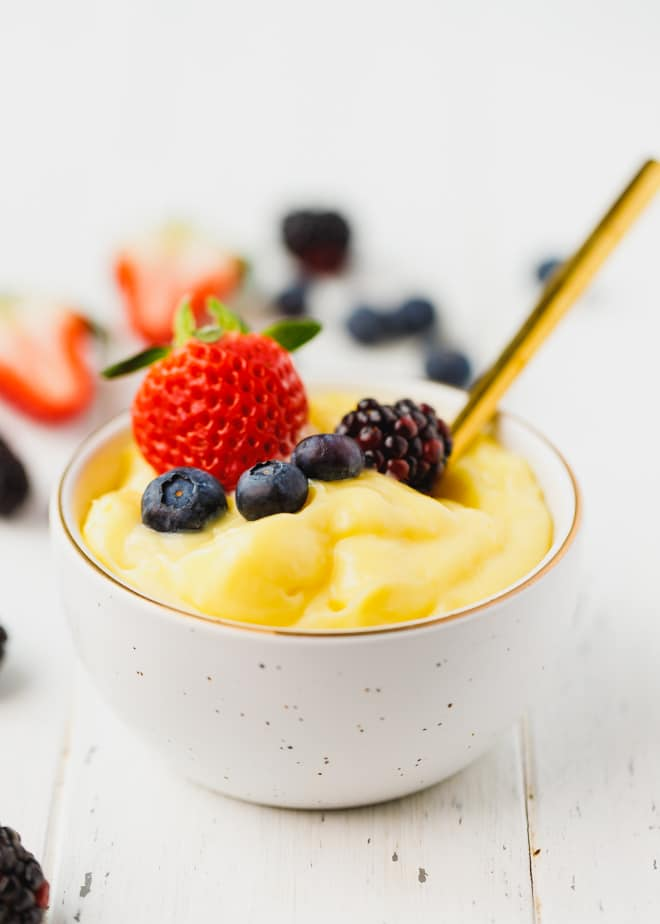

Description
This is a simple recipe that can be made in under an hour.
The recipe requires very little preparation and can be altered to the taste of the person making it or the people who will be eating this dish. It is simple enough that inexperienced people can make the dish.
The custard is best served with a fruits or cake.
Ingredients
- 4 tablespoons pre-made custard mix
- 1 tablespoon sugar
- 2-3 cups of milk
- Strawberries
- Malberries
Steps
- Mix the custard powder in milk until a paste is formed
- Pour the paste into two cups of milk and heat slowly while mixing
- Add milk to the rest of the mixture to adjust the thickness
- Allow to cool and place a few of the fruits on the custard